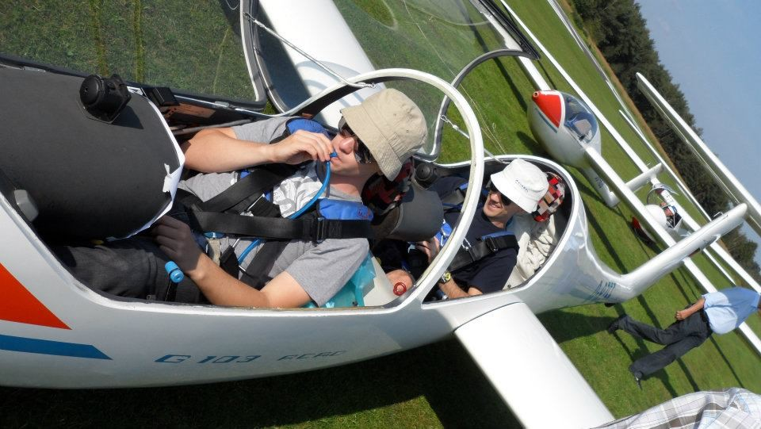

Wat is zweefvliegen?
Zweefvliegen is een vliegsport waarbij je een vliegtuig hanteert zonder motor. Zo’n vliegtuig noemen we een zweefvliegtuig. Zonder de aandrijving van de motor daalt het vliegtuig langzaam maar zeker. Door het gebruik van stijgende lucht (bv. thermiek of hellingstijgwind), wordt je vliegtuig terug opgetild en kan de piloot in de lucht blijven. Het zweefvliegtuig wordt bij het begin van de vlucht in de lucht getrokken door middel van een motorvliegtuig dat je toestel de hoogte intrekt of met een lier. Naast individueel vliegen wordt zweefvliegen ook beschouwd als een teamsport, want er zijn heel wat mensen nodig om een zweefvliegbedrijf draaiende te houden.